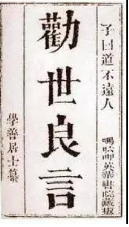
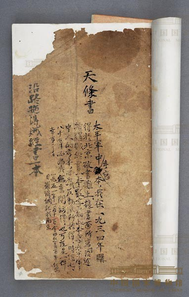

承接第一部分 · 科举道路失败之后
宗教领袖
——新世界的创造者
一个传统知识分子开始寻找新的解释体系。个人挫败，怎样被改写为共同信仰；共同信仰，又怎样成为组织力量？
核心问题
为什么一种新的信仰能够成为社会动员力量？
个人困境我
解释失败为何发生
信仰世界应当如何
组织我们如何行动
从一个人的答案
到一群人的秩序
第一部分的结尾，是洪秀全的科举道路彻底失败。但旧路断裂，并不自动产生新世界。
这一部分追问：他如何把一本外来的布道书、一段后来被重新解释的异梦，转化为一套可以传播、可以组织、也可以要求成员遵守的信仰体系。
**关键判断不是“宗教让群众迷信”，而是个人解释、组织劳动与社会处境三者结合，信仰才成为动员力量。**
文献一 · 1832 年刊本
从儒家士子到宗教解释者
重点不在“读过一本书”，而在六年后如何重新阅读它。

原始文献书影 · 不是装饰图
《劝世良言》1832 · 梁发
来源：哈佛大学图书馆藏本影印（Wikimedia Commons 数字化）
它是什么中文布道书
梁发用中文阐释“独一真神”，并反对偶像崇拜。
它证明什么思想资源
书中提供了上帝、罪与救赎、排斥偶像的语言。
它不能证明被动照搬
不能据此认定洪秀全完整接受了传教士的基督教体系。
书中命题独一真神 · 反偶像
重新解释
洪秀全的阅读异梦中的“老者”＝上帝
个人受命＝救世使命
约 1836广州应试时得到布道书
1837病中异象，当时尚未系统解释
1843重读并把书与异梦连接
《劝世良言》由梁发编写，1832 年刊行。它传递“独一真神”、反对偶像崇拜等观念。
但洪秀全不是在拿到书的那一刻就完成转变。按照洪仁玕口述、韩山文整理的叙事，他先得到书，后来经历异梦，直到 1843 年才重读并把两者连接。
所以这里强调“选择性吸收”：书提供词汇，洪秀全用自己的经历重新排列这些词汇，形成了与传教士正统教义不同的解释。
获书年份在回忆材料中并非完全无疑，因此屏幕使用“约 1836”，不把口述记忆写成精确档案日期。
史料方法 · 先追问“我们如何知道”
从个人经历到救世使命
1837
病中异象后来被讲述为：升天、见“天父”、受命“斩妖”。
经历者洪秀全1837 年病中经历
→
口述者洪仁玕亲属与早期同道
→
整理者韩山文1854 年英文出版
→
传播后世研究译本、引述与解释
历史学能做的研究异梦如何被叙述、重释并转化为权威。
 1935 重印本标题页 · 原著 1854
1935 重印本标题页 · 原著 1854
The Visions of Hung-Siu-Tshuen韩山文 · 1854
来源：燕京大学图书馆 1935 重印本；Wikimedia Commons 公版扫描
这一页不把“异梦”当作可以直接验证的超自然事实，而是先追问史料链。
我们今天熟悉的细节，主要来自洪仁玕的口述，再由巴色会传教士韩山文整理成英文著作，1854 年出版。屏幕上的图是燕京大学图书馆 1935 年重印本的标题页。
这份材料能帮助我们研究洪秀全早年的经历如何被亲属和宗教网络讲述；但它不能逐字等同洪秀全本人的即时自述，更不能证明异象的超自然真实性。
历史学更稳妥的问题是：这段经历后来怎样被解释为“受命救世”，并成为组织权威的来源。
从观念到共同体 · 1844—1847
思想如何变成组织

宗教规范文本 · 中国国家博物馆藏
《天条书》手抄本约 1851 前后 · 内容形成于 1847
来源：中国国家博物馆；国内孤本，原缺第 4、5 页为后补抄
思想建构洪秀全解释异梦、撰写教义、提供神圣使命
＋
组织传播冯云山深入广西紫荆山区，建立稳定信众网络
个人思想新的世界解释
→
共同仪式祷告、十款天条
→
组织纪律成员身份与共同边界
→
群众动员跨村落的行动能力
这件史料证明宗教不只提供信念，也通过规则、仪式和学习要求进入日常生活。
它不能单独证明不能把现存残缺抄本视为所有成员实践完全一致的记录。
不是一个人的运动：思想 + 组织劳动 + 地方社会网络共同作用。
这一页要纠正“洪秀全一个人创立一切”的英雄中心叙事。
洪秀全更偏向提供思想解释和神圣使命，冯云山则在广西紫荆山区进行了长期、具体的组织传播。没有后者把分散信众联成礼拜共同体，思想很难变成稳定组织。
《天条书》把祷告、十款天条与日常纪律结合起来，是“信仰如何制度化”的物证。国博说明指出，现存手抄本缺页，罗尔纲曾据柏林藏本补抄，因此补页不能当作原抄。
它能证明规范文本的存在，却不能直接证明每个成员都以同样方式实践这些规范。
文献二 · 《原道救世歌》
从宗教信仰到社会理想
依据传世录文重排 · 非原件影像
“开辟真神惟上帝，无分贵贱拜宜虔。
天父上帝人人共，天下一家自古传。”
洪秀全《原道救世歌》
01立一神把世界解释权集中到“皇上帝”，否定多神与偶像。
“开辟真神惟上帝”
02破旧俗把反偶像与戒淫、孝亲、戒盗赌等道德规训相连。
“勿拜祁神须作正”
03倡平等以共同天父和“皆兄弟”表达超越贵贱的共同身份。
“普天之下皆兄弟”
史料边界：诗歌能证明宗教语言开始承载社会批判；不能据此断言一套完整、可执行的现代平等制度已经形成。
《原道救世歌》把“唯一真神”与共同天父、天下一家联系起来。这里选取的句子来自传世录文，屏幕明确标注为重排文字，不伪装成原件影像。
它的思想可以分成三层：确立唯一真神；用信仰批判偶像与旧俗；用“共同天父”“普天兄弟”构造一种超越贵贱的共同身份。
于是宗教改革语言可以继续向社会改革、政治反抗延伸。但要把握边界：这些诗句表达的是道德和宗教理想，不等于一套已经设计完成、实际执行的现代平等制度。
社会条件 · 信仰不是在真空中传播
为什么拜上帝会能够发展？
不是“宗教足够有吸引力”这一条原因，而是它回应了具体的生存与秩序问题。
生计人地矛盾人口、生计与土地资源之间的压力加重，边缘群体需要新的互助网络。
风险天灾与粮价1840 年代末灾害、饥馑与市场波动，使日常生活更不稳定。
负担苛捐杂税赋役、地主剥削与基层治理问题，把经济困境转化为对旧秩序的不满。
结构地方冲突族群、土客、团练与村落网络既制造紧张，也提供动员的现成连接。
现实问题孤立、风险、冲突、失序
信仰回应
组织承诺共同身份、纪律、互助、解释
核心判断
思想之所以成为动员力量，不只因为它“说了什么”，还因为它进入了怎样的社会关系。
拜上帝会在广西的发展不能用单一原因解释。人地与生计压力、灾害、税费负担、地方冲突和村落网络共同构成传播环境。
冯云山在紫荆山的工作尤其关键：他并非只做抽象布道，而是进入烧炭、种山、做工等群体的日常关系，把信仰变成可持续的共同体。
所以宗教回应的不只是“死后得救”，也回应现实中的孤立、风险和秩序需求。这里使用的是结构性解释，不把任何一种困境写成起义的唯一原因。
身份变化 · 第二部分结论
从失意秀才到宗教领袖
01旧秩序中的位置秀才读书人把人生希望寄托于科举与功名。
→
02意义危机中的行动思想探索者以《劝世良言》重新解释异梦与失败。
→
03共同体中的位置宗教领袖让解释进入文本、仪式、纪律和组织。
洪秀全通过重新解释宗教思想，
为个人困境和社会矛盾寻找新的答案。
但答案仍带着他所处时代的语言、等级观与权威结构。
下一部分
宗教领袖如何进一步成为革命领袖？
信仰共同体 → 集体行动 → 政治对抗
第二部分可以收束为三次身份移动：失意秀才、思想探索者、宗教领袖。
洪秀全的创造性在于，他没有简单照搬西方宗教，而是把外来文本、个人异梦与中国的道德和秩序语言重新组合；冯云山等人又把这套解释落实为组织。
但这种新世界并没有摆脱时代：共同身份与严格纪律并存，平等语言与神圣权威并存。由此自然进入下一问——当宗教共同体获得集体行动能力，它怎样进一步成为革命力量？